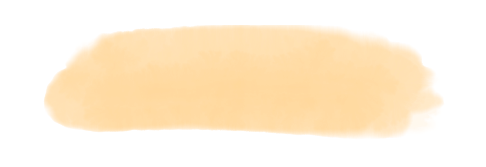
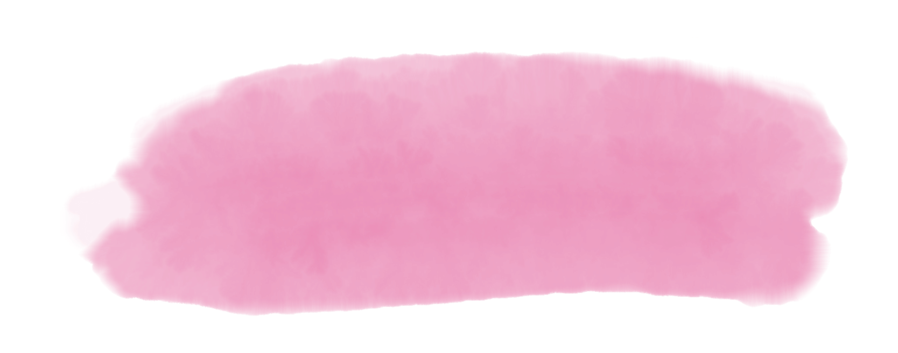
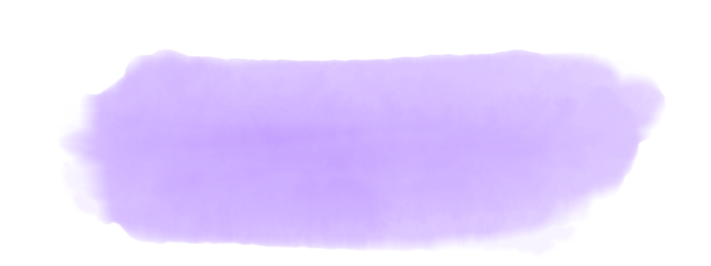
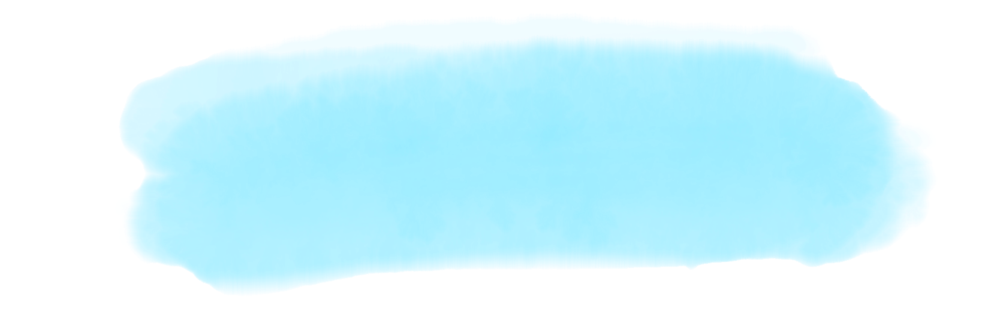

Stefanie Cohen
Product | UX Research | Human Factors
I help teams navigate complex clinical rules and regulatory constraints to build digital solutions that improve outcomes.
Years of working with start-up, mid-sized, and international teams have influenced my product and program management style, which centers on highly informed teams. After initial observation of company processes and personalities, I craft a way of working specific to the needs of my unique team. My technique is highly regarded, and I've taught others how to replicate it.
My roots are in Lean Startup and Design Thinking. I completed the NSF I-Corps program during my Master's degree and taught empathy mapping and value propositions. I'm even mentioned in the 115th Congress Subcommittee on Research and Technology hearing from December 2017 for my experience in the I-Corps program. Lately, I've been applying the Transverse Gliding methodology for problem scoping and solution ideation.
After participating in human factors planning and activities while developing medical devices, I decided to formalize my training as a human factors engineer at Tufts University. I've studied and applied techniques in usability testing and heuristic evaluation, and completed risk and reliability training for conducting task analyses and failure modes effects analyses.

Translate dense clinical data and complex rules into clear, plain-language summaries to reduce cognitive load.

Design away misuse risks and force-multiplier errors to ensure the safest path is the path of least resistance.

Prioritize passive data collection and background workflow automation so managing health fits naturally into everyday life.

Technology should support human decision-making, not replace it or impose rigid mandates.
Translate dense clinical data and complex rules into clear, plain-language summaries to reduce cognitive load.
Design away misuse risks and force-multiplier errors to ensure the safest path is the path of least resistance.
Prioritize passive data collection and background workflow automation so managing health fits naturally into everyday life.
Technology should support human decision-making, not replace it or impose rigid mandates.
Based in
New York City
Education
University of Maryland & Tufts University
Companies
Evinova, AstraZeneca, Medicrea
Tools
Gemini, Claude, Lovable, v0, NotebookLM, Adobe Illustrator
Outside of work
Travel, photography, digital illustration, acrylic painting